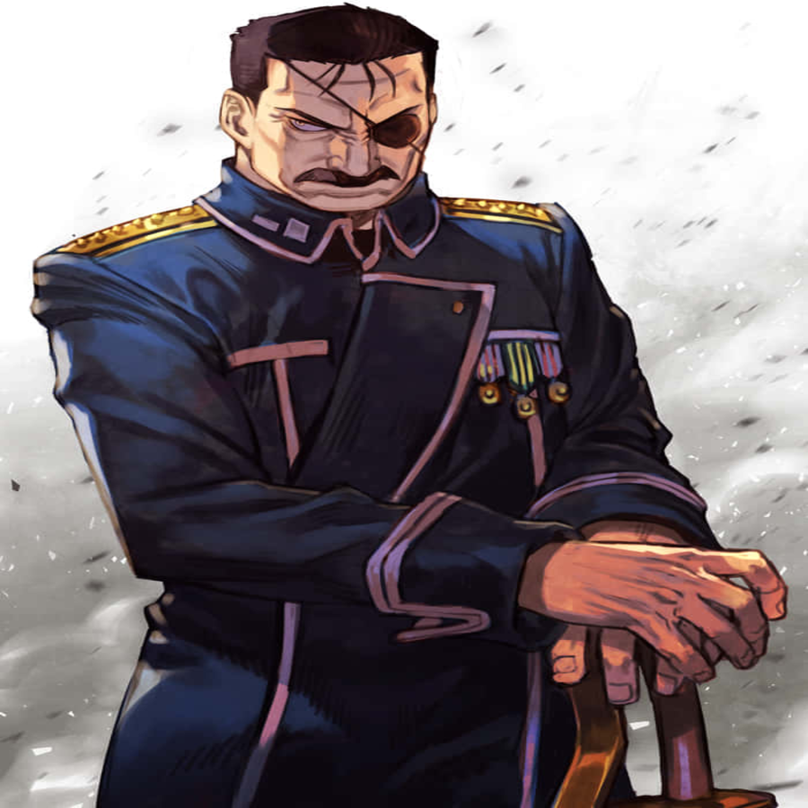
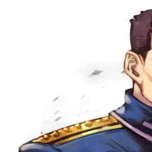
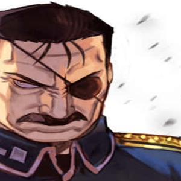
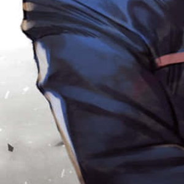
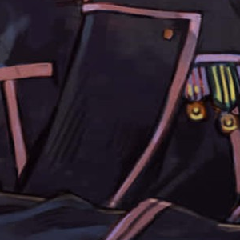
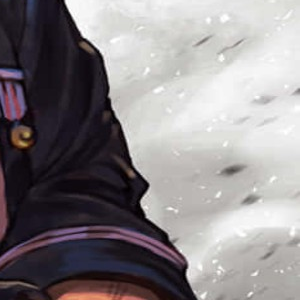
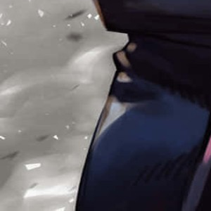
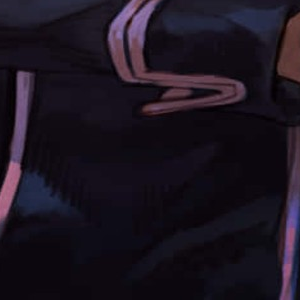
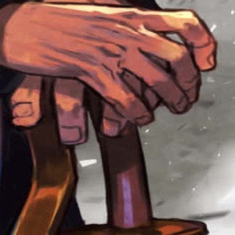

King Bradley é o líder supremo de Amestris e um dos principais antagonistas de Fullmetal Alchemist: Brotherhood. Sob sua identidade humana, ele aparenta ser um governante carismático e estrategista, mas na verdade é o Homúnculo conhecido como Wrath, possuindo habilidades de combate sobre-humanas e um olho definitivo que lhe permite prever ataques. Sua história é marcada por lealdade ao Pai dos Homúnculos, embora tenha desenvolvido um senso de individualidade ao longo do tempo.







